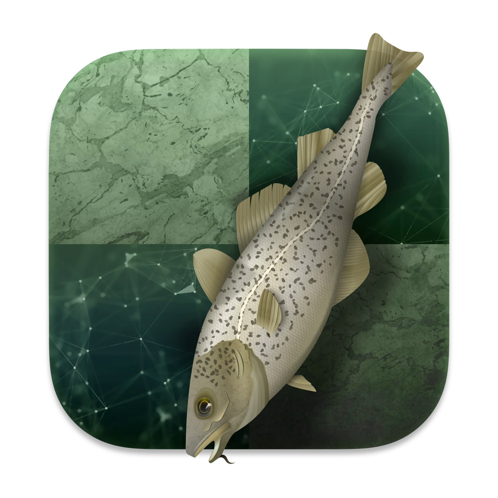

Stockfish is widely considered the strongest chess engine in existence. Every change to the engine must pass sequential probability ratio tests (SPRT) on Fishtest, a distributed testing framework that plays tens of thousands of games against the current master before a patch is accepted. Below are my merged contributions.
Plus 52 simplifications passing non-regression testing, removing code while keeping playing strength. See all commits.